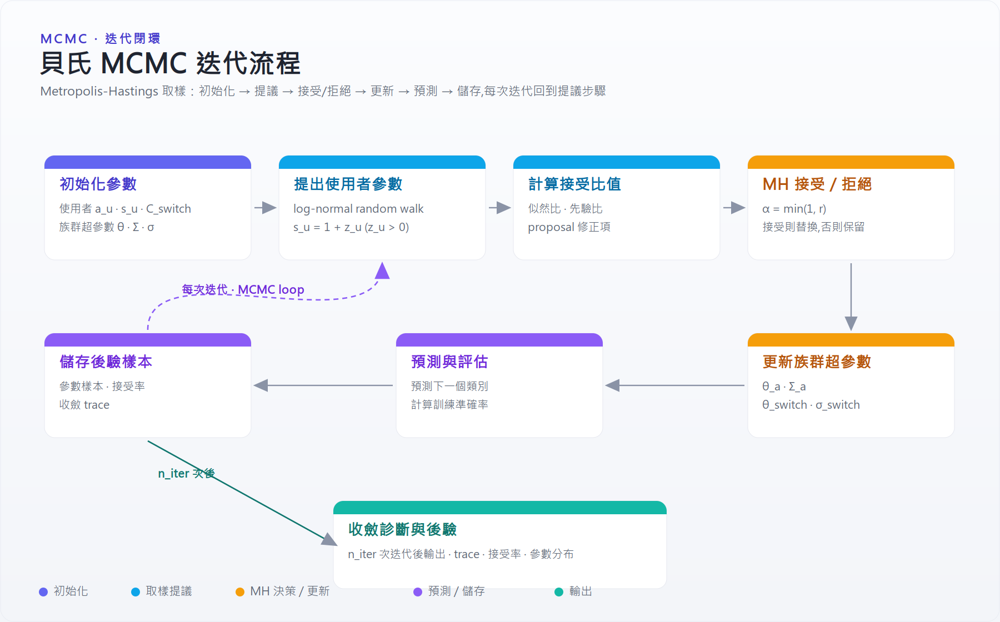
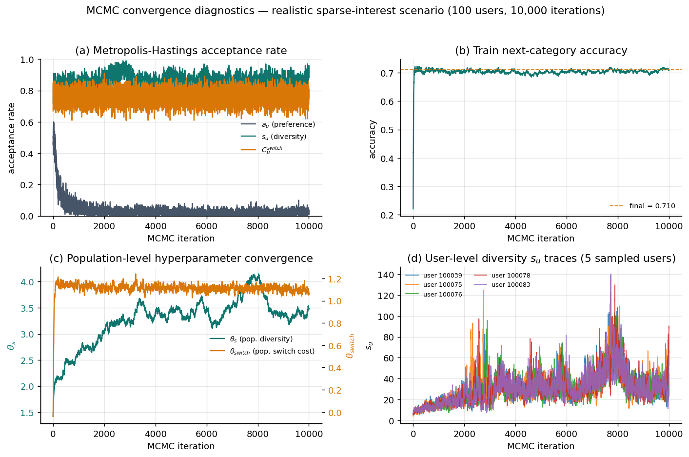
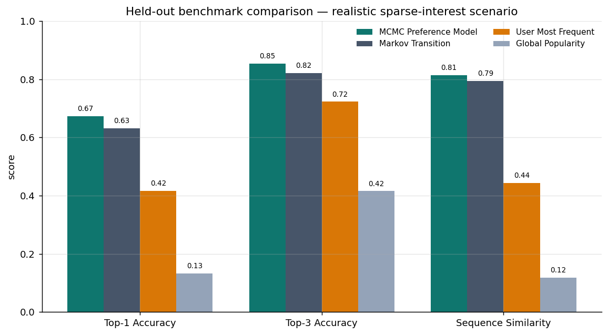

Bayesian MCMC 瀏覽偏好模型¶
這個專案用貝氏 MCMC（Metropolis-Hastings）從使用者的瀏覽序列中，估計每個人各自的「類別偏好、多樣性、轉換成本」三組參數，再用這些參數預測使用者下一個會看的類別，並和幾個常見 baseline 比較預測表現。
簡單說：給一堆「誰、在哪個 session、依序看了哪些類別」的瀏覽紀錄，模型會反推出每位使用者的偏好結構，而不是只用大眾熱門度去猜。
原始碼： https://github.com/YuHsunWang/mcmc-portfolio
這個專案在解什麼問題¶
電商／內容瀏覽的「下一步預測」常見作法是熱門度或使用者歷史頻率，但這些都忽略了個人的偏好結構與「換類別要付出的摩擦成本」。本專案把它建模成一個帶外部選項（看完就離開）的多項 logit 選擇模型，並用 MCMC 估計每位使用者各自的參數：
| 參數 | 意義 |
|---|---|
a_u |
類別偏好向量：這個人本來就偏好哪些類別 |
s_u |
多樣性／彈性（限制為 s_u = 1 + z_u, z_u > 0）：偏好集中還是分散 |
C_switch_u |
轉換成本：在 session 內從一類跳到另一類的摩擦 |
轉換成本用「經驗轉移矩陣」當作 switching-friction 的代理變數。
方法概要¶
每次 MCMC 迭代做的事：
- 用 lognormal random walk 對使用者層級參數提出新值（proposal）。
- 計算 likelihood 與 prior 比值。
- 套用 Metropolis-Hastings 的 accept/reject。
- 更新族群層級（population-level）的超參數。
- 儲存後驗樣本與診斷量（acceptance rate、trace 等）。
專案同時提供兩種實作：
- 研究用 Notebook（
MCMC_L1_portfolio.ipynb）：完整推導與視覺化。 - GPU-ready 向量化版本（
mcmc_gpu_parallel.py）：用 CuPy 加速，沒有 CUDA 時自動 fallback 到 NumPy。
迭代流程圖¶

參數收斂過程¶
下圖是 realistic 稀疏興趣情境（100 位使用者、10,000 次迭代）的收斂診斷：

四個面板的解讀：
- (a) 接受率：三組參數的 Metropolis-Hastings 接受率很快進入穩定區間（偏好
a_u約 0.05、多樣性s_u約 0.89、轉換成本C_switch約 0.79）。a_u接受率較低是因為它是 10 維向量、提案一次要全部接受，屬正常現象。 - (b) 訓練準確率：在數百次迭代內就從隨機水準衝到約 0.71 並維持平穩，代表取樣器很快找到合理的參數區域。
- (c) 族群超參數：
θ_switch幾乎立即收斂，θ_s（族群多樣性）則逐步爬升後在約 3.5 上下穩定震盪——典型的階層模型 burn-in 後混合行為。 - (d) 使用者層級軌跡：5 位抽樣使用者的多樣性參數
s_u軌跡持續混合、沒有卡死，顯示鏈在使用者層級也有良好的探索性。
結果¶
包含的結果檔皆為 100 位使用者 × 10,000 次 MCMC 迭代，跑在兩種合成情境上。評估指標為 held-out 測試集上的下一類別 Top-1 / Top-3 準確率與序列相似度。
| 情境 | MCMC Top-1 | MCMC Top-3 | 序列相似度 | 對 Markov | 對使用者最常看 | 對全域熱門 |
|---|---|---|---|---|---|---|
| Balanced 合成 | 48.13% | 64.73% | 0.873 | +0.72 pp | +31.47 pp | +35.27 pp |
| Realistic 稀疏興趣合成 | 67.30% | 85.34% | 0.814 | +4.11 pp | +25.63 pp | +54.01 pp |

重點：
- MCMC 偏好模型在兩種情境下都穩定勝過熱門度與使用者頻率 baseline。
- 在比較貼近真實的「稀疏興趣」情境（每人少數主要興趣、session 多停在同一意圖叢集）下，連 Markov 轉移 baseline 都被它在 Top-1、Top-3、序列相似度三項全面超越。
怎麼跑¶
小型 demo：
重現包含的稀疏情境結果：
python mcmc_gpu_parallel.py --n-users 100 --n-iter 10000 \
--output-dir outputs_realistic_100u_10000iter
選用 GPU（依 CUDA 版本選對應套件）：
技術重點¶
- 自訂 Metropolis-Hastings 取樣器，含使用者層級 + 族群層級（hierarchical）參數更新。
- 帶外部「停止」選項的多項 logit 選擇模型。
- 向量化／GPU-ready 實作，CuPy 不可用時自動退回 NumPy。
- 與熱門度、使用者頻率、Markov 轉移三種 baseline 的 held-out 比較框架。
- 使用合成瀏覽資料，可完全重現、可公開分享。
限制¶
- 資料為合成資料，目的是可重現的公開展示，不是真實業務表現。
- 轉換成本矩陣是基於轉移頻率的經驗代理，不是真實 switching cost 的因果估計。
- 短鏈（少迭代）適合視覺化，但不足以做最終統計推論；正式推論需更長的鏈、burn-in、後驗平均與收斂診斷。